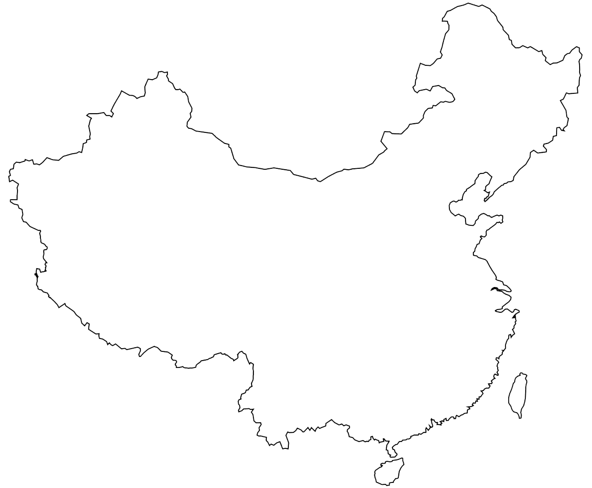

Sichuan is one of the most popular tourist destinations no matter in china or world. Welcome to Sichuan. It's fitting that an ancient form of opera and magic called biànliǎn (face-changing) originated here, for Sichuan (四川, Sìchuān) is a land of many guises. Capital Chengdu shows a modern face, but just beyond its ring roads you'll find a more traditional landscape of mist-shrouded, sacred mountains, and a countryside scattered with ancient villages and cliffs of carved Buddhas.
Central Sichuan is also home to the giant panda, the most famous face in China. In the south, expect a veil of history and a muted beauty that sees far fewer travellers than the rest of the region. To the north the visage changes again into a fairyland of alpine valleys and blue-green lakes. Sichuan’s Tibetan side appears as you venture west. This is Kham, one of the former Tibetan prefectures: a vast landscape of plateau grasslands and glacial mountains where Tibetan culture still thrives and you’re certain to have your most challenging, yet most magical, experiences.
Move your mouse on map to see the location of Sichuan

Capital city Chengdu
Chengdu is no great draw when it comes to major tourist sites, but yet this is one of the few super-sized Chinese cities that most visitors do end up enjoying. There's a relaxing teahouse culture – favourite local institutions have been serving the same brews for generations; a lively nightlife that mixes craft beer bars and super-hip clubs with Sichuan opera shows; and delicious food that is famous for its heat, history and variety even in cuisine-rich China, and very much a point of pride: Chengdu is, after all, Unesco's first-ever City of Gastronomy. Oh, and as if that's not enough, this is the place to come to see China's cutest faces – the giant pandas.
Research Base of Giant Panda Breeding
It’s well-known that Sichuan is the hometown to giant pandas, the most symbolic feature of China which is no wonder one of the cutest animals in the world. Honored as the living fossil and the national treasure of China, giant pandas have at least lived on the earth for more than 8 million years. Sichuan Giant Panda Sanctuaries, home to more than 30% of the world's pandas which are classed as highly endangered, covers 924,500 ha with seven nature reserves and nine scenic parks in the Qionglai and Jiajin Mountains. The sanctuaries constitute the largest remaining contiguous habitat of the giant panda, a relict from the paleo-tropic forests of the Tertiary Era. It is also the species' most important site for captive breeding. The sanctuaries are home to other globally endangered animals such as the red panda, the snow leopard and clouded leopard. They are among the botanically richest sites of any region in the world outside the tropical rainforests, with between 5,000 and 6,000 species of flora in over 1,000 genera.
jiuzhaigou national park
JIUZHAIGOU, praised as a fairyland on earth which is renowned for its colorful lakes and forests, multi-level waterfalls, as well as snow-capped peaks. With its high reputation and rare karst scenery, Jiuzhaigou Valley is the only natural reserve in China that enjoys the reputation of both the “World Natural Heritage” and “World Biosphere Reserve”. Sichuan is the second largest of China's 23 provinces based on its land area of 187,260 square miles (485,000 sq km). It is located in southwestern China adjacent to the country's largest province, Qinghai. Sichuan's capital city is Chengdu and as of 2007, the province had a population of 87,250,000 people. Sichuan is an important province to China because of its abundant agricultural resources which include such Chinese staples as rice and wheat. Sichuan is also rich in mineral resources and is one of China's main industrial centers.